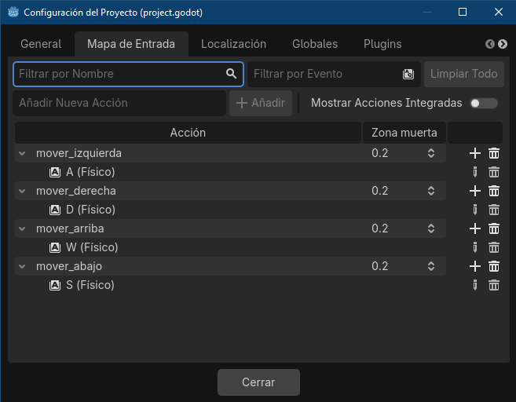

1. Requerimientos del Sistema (Windows)
Antes de comenzar, asegúrate de que tu computadora cumple con las especificaciones técnicas indispensables para ejecutar la versión estándar de Godot Engine 4 con soporte para GDScript:
| Componente | Requerimientos Mínimos | Recomendados |
|---|---|---|
| Sistema Operativo | Windows 7 / 8 / 10 / 11 (64 bits) | Windows 10 / 11 (64 bits) |
| Procesador (CPU) | Intel Core i3 / AMD A8 (Dual-Core) | Intel Core i5 / AMD Ryzen 5 (Quad-Core o superior) |
| Memoria RAM | 4 GB de RAM | 8 GB o 16 GB de RAM |
| Gráficos (GPU) | Integrada con soporte OpenGL 3.3 / Vulkan 1.0 | Dedicada compatible con Vulkan 1.2 o superior |
| Entorno de Scripting | Soporte nativo integrado (GDScript) | Soporte nativo integrado (GDScript) |
2. Instalación Paso a Paso (Evitando Errores Comunes)
Al trabajar con GDScript, el proceso de instalación es sumamente directo e independiente de dependencias externas como compiladores de terceros. Sigue estrictamente este orden:
Paso 1: Descargar Godot Engine Estándar
Entra a la web oficial y descarga la versión estándar del motor. Esta opción ya incluye el editor de código integrado optimizado para GDScript y no requiere instalar entornos como .NET de Microsoft.
Descargar Godot Engine Oficial⚠️ Regla de Oro para Estudiantes:
Godot es completamente portable (no requiere un asistente de instalación). Descomprime el archivo ZIP
en una ruta raíz limpia de tu disco duro, por ejemplo: C:\Godot\. No lo
ejecutes directamente desde el archivo ZIP comprimido o perderás tus archivos de
configuración local.
3. Reconocimiento de la Interfaz de Godot
Al abrir el editor por primera vez, te encontrarás con cinco zonas de control indispensables. Entender la distribución evitará confusiones al momento de construir tus niveles:
Mapa Visual de la Interfaz Gráfica
- Panel Escena (Arriba Izquierda): Muestra la estructura de árbol de tu nivel actual. Todo elemento en pantalla nace aquí.
- Panel de Sistema de Archivos (Abajo Izquierda): Tu explorador de archivos interno.
Contiene sprites, escenas (
.tscn) y códigos (.gd). - Visor Central (Viewport): El lienzo gráfico donde arrastras, escalas y posicionas tus componentes visuales.
- Panel Inferior: Contiene la consola de **Salida**, vital para ver impresiones de depuración mediante código.
- Inspector (Derecha): Cambia dinámicamente según el nodo seleccionado, exponiendo campos editables como la posición, rotación o físicas.
4. Proyecto 1: "Hola Mundo" desde la Consola del Motor
Diseñado para familiarizarse con el ciclo de vida de inicialización de un script nativo en GDScript.
Flujo de Configuración:
- Crea un nuevo proyecto en la ventana inicial de Godot de forma habitual.
- En el panel **Escena**, pulsa el botón **"Escena 2D"**. Creará un nodo raíz básico llamado
Node2D. - Renombra este nodo como
Maine introduce la combinación de teclasCtrl + Spara guardarlo comomain.tscn. - Con el nodo
Mainseleccionado, presiona el icono del pergamino con un signo más en la parte superior del panel Escena (**Añadir Script**). - Configura los campos: Lenguaje = **GDScript**, Hereda de =
Node2Dy presiona Crear.
Código Fuente (main.gd):
extends Node2D
# Se ejecuta una sola vez cuando el nodo se monta con éxito en el árbol de la escena
func _ready() -> void:
# Imprime un mensaje académico en la pestaña de Salida inferior
print("¡Inicialización Exitosa! Hola Mundo desde GDScript en Godot.")
Prueba el proyecto pulsando **F5** (y seleccionando la escena main.tscn como principal si te lo solicita). Verás el mensaje impreso en el panel inferior de la interfaz.
5. Comprensión Fundamental de la Variable delta
Uno de los mayores desafíos lógicos para un estudiante de programación de software interactivo es comprender la naturaleza temporal de un bucle de juego. Aquí analizamos a fondo el parámetro de físicas:
Anatomía del Parámetro de Tiempo en Motores de Juegos
¿Qué es delta y por qué es crucial?
A diferencia de un entorno web que reacciona de forma pasiva a eventos del usuario (como un clic de
ratón), un motor de videojuegos corre en un bucle infinito sumamente rápido. La función
_physics_process() se ejecuta de forma constante a una tasa fija (por defecto, 60
veces por segundo).
La variable delta es un valor de tipo numérico flotante (float) que almacena
exactamente el tiempo en segundos (o fracciones de segundo) que tomó completar el último ciclo
de procesamiento. Si el juego corre a unos perfectos 60 fotogramas por segundo, el valor
matemático de delta será de aproximadamente 0.01666... segundos.
Si multiplicas un vector de movimiento directamente por la velocidad en cada frame sin considerar el
factor tiempo, un personaje se moverá mucho más rápido en una computadora de alta gama (ej. a 144
FPS) que en una de bajos recursos (ej. a 30 FPS). Multiplicar de forma manual tus operaciones por
delta convierte tus unidades de "píxeles por fotograma" a "píxeles por segundo",
estandarizando la experiencia de juego en cualquier hardware.
¿Por qué lleva un guion bajo ( _delta ) en nuestro código base?
En el estándar de codificación de GDScript, un guion bajo al inicio del nombre de un argumento actúa como una directiva explícita para el compilador y el analizador estático de código (Linter):
- Regla del Linter: Si declaras un parámetro en una función y no lo utilizas en el bloque de instrucciones inferior, Godot arrojará una advertencia amarilla (Warning) indicando un posible desperdicio de memoria o descuido.
- El caso de move_and_slide(): Al programar con la clase nativa
CharacterBody2D, el método integrado de físicasmove_and_slide()toma la propiedad reservadavelocityy **aplica automáticamente el cálculo de delta de forma interna**. - Conclusión: Como no necesitamos operar matemáticamente con
deltaen el script de movimiento lineal básico, le agregamos el guion bajo convirtiéndolo en_delta. Esto le avisa a Godot: "Sé que esta variable existe aquí por diseño del motor, pero no la voy a invocar directamente en esta ocasión", manteniendo limpia nuestra consola de advertencias.
6. Proyecto 2: Movimiento y Sistema de Colisiones Sólidas
En este bloque aprenderás a capturar las entradas de teclado del alumno y a implementar un sistema de colisiones físicas reales que impida al jugador atravesar muros o salirse de los límites establecidos.
Paso A: Mapeado de Controles del Teclado
- Entra en la barra de opciones: Proyecto -> Configuración del Proyecto.
- Ve a la pestaña Mapa de Entradas (Input Map).
- Escribe
mover_derechaen la barra de texto superior y pulsa **Añadir**. Realiza lo mismo para las acciones:mover_izquierda,mover_arribaymover_abajo. - Presiona el botón **"+"** al lado de cada acción añadida y pulsa la tecla física correspondiente (A, D, W, S).

Paso B: Construcción de la Escena Física del Jugador
Para procesar colisiones en dos dimensiones, requerimos asociar un cuerpo de física con una forma geométrica rígida definida:

- Crea una escena nueva limpia. Añade como nodo raíz un **CharacterBody2D** y nómbralo
Jugador. - Haz clic derecho sobre
Jugador-> **Añadir Nodo Hijo**, e incorpora un **Sprite2D**. - Arrastra el logotipo
icon.svgdesde tus archivos hasta el recuadro **Texture** dentro del Inspector del Sprite2D. - Haz clic derecho sobre
Jugador-> **Añadir Nodo Hijo**, y añade un **CollisionShape2D**. - Selecciona el
CollisionShape2D, ve al Inspector, localiza el campo **Shape** y elige **`New RectangleShape2D`**. - Ajusta el cuadro celeste para cubrir el sprite por completo, guarda la escena como
jugador.tscny añádele un Script.
Código de Movimiento Optimizado (jugador.gd):
extends CharacterBody2D
@export var velocidad: float = 350.0
# Usamos _delta con guion bajo porque move_and_slide() maneja el tiempo internamente
func _physics_process(_delta: float) -> void:
# MÉTODO OPTIMIZADO: get_vector calcula dirección, diagonales y normalización automáticamente
# NOTA: Usamos las acciones que configuramos en nuestro Mapa de Entrada
var direccion := Input.get_vector("mover_izquierda", "mover_derecha", "mover_arriba", "mover_abajo")
# Si hay movimiento activo, aplicamos la velocidad directa
if direccion != Vector2.ZERO:
velocity = direccion * velocidad
else:
# Si se sueltan las teclas, detenemos el cuerpo de forma controlada
# Modifica el último parámetro si deseas un frenado con deslizamiento suave (fricción)
velocity.x = move_toward(velocity.x, 0, velocidad)
velocity.y = move_toward(velocity.y, 0, velocidad)
# Desplaza el objeto calculando de forma automática choques y deslizamientos
move_and_slide()
Paso C: Creación de Muros o Obstáculos de Colisión
Para comprobar que el código funciona y frena ante un objeto, necesitamos añadir un cuerpo estático en el entorno:
- Regresa a tu escena principal
main.tscn. - Arrastra el archivo de la escena del personaje (
jugador.tscn) desde el Panel de Archivos hacia el Visor Central. - Añade un nodo de tipo **StaticBody2D** (para obstáculos fijos) como hijo de
Main. - Añádele un **CollisionShape2D** a ese `StaticBody2D` y asígnale un tamaño rectangular grande dentro del mapa.
- Presiona **F6** para iniciar la escena actual y comprueba que el personaje ya no puede atravesar el obstáculo.